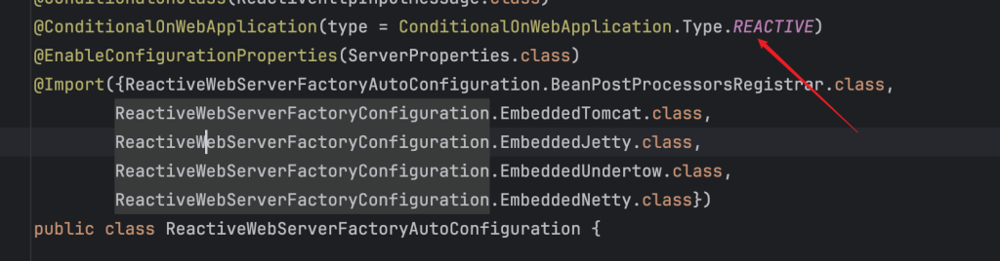

Web 服务器的启动流程分析
如何判断创建哪种web容器：servlet？reactive？
我们在启动Spring Boot程序的时候，会使用SpringApplication.run方法来启动，在启动流程中首先要判断的就是需要启动什么类型的服务器，是servlet？或者是reactive？那么spring boot是如何进行判断的呢？

根据上面的流程首先会判断出来要创建的web服务器的类型，然后通过spring.factories文件中的配置的ApplicationContextFactory实现，根据容器类型来创建出对应的容器：
reactive：AnnotationConfigReactiveWebServerApplicationContext；
servlet：AnnotationConfigServletWebServerApplicationContext；
上面已经创建出了对应的Spring容器，接下来就是要启动服务器来接收请求了，下面来看具体的流程：
我们假设创建的是reactive的容器，即AnnotationConfigReactiveWebServerApplicationContext。该类继承自ReactiveWebServerApplicationContext，该类中重写了生命周期中的onRefresh方法来创建一个WebServer
@Override
protected void onRefresh() {
super.onRefresh();
try {
createWebServer();
}
catch (Throwable ex) {
throw new ApplicationContextException("Unable to start reactive web server", ex);
}
}
在createWebServer()中完成的步骤就是一个：初始化WebServerManager。
this.serverManager = new WebServerManager(this, webServerFactory, this::getHttpHandler, lazyInit);
初始化WebServerManager
从容器中获取ReactiveWebServerFactory
在容器中获取，首先需要容器中有ReactiveWebServerFactory的实现，经过查找发现是通过自动配置的方式将ReactiveWebServerFactory的实现加载到spring容器中的。我们查看autoconfiguration的配置发现有ReactiveWebServerFactoryAutoConfiguration自动配置类。

首先web服务需要是reactive类型的，然后通过@Import的方式我们看到加载了多种web服务器。通过打断点的方式，发现此处加载的NettyReactiveWebServerFactory，也就是最终生效的是EmbeddedNetty。这里创建的都是工厂类，还不是实际的web服务器，这里返回的是NettyReactiveWebServerFactory。
从容器中获取HttpHandler
HttpHandler是spring处理http协议请求的顶级抽象接口，同样是从容器中获取的该接口的实现。我们还是查看自动配置类，发现HttpHandler的自动配置类是HttpHandlerAutoConfiguration。在自动配置类中通过WebHttpHandlerBuilder最终会创建出HttpHandler。下面看详细的创建流程：

初始化过程中，从容器中获取的WebHandler实现开始，在基础之上依次封装了：负责过滤器执行、负责处理异常、使用适配器将webHandler与httpHandler结合 这三种能力之后完成bean对象的创建。
从上面的流程可以看出，最原始的对象则是在容器中获得的名字为webHandler的实例。那么有没有呢，其实是有的：

上面的配置是在自动配置类WebFluxAutoConfiguration中完成的。除此之外我们还应注意到的是在步骤2中的applicationContext方法注释：

上面的说明也明确了我们可以进行拓展的地方，比如可以实现WebFilter接口，将自己的过滤逻辑添加进程序的执行流程中。
此时我们得到了构造WebServerManager的主要参数，即有一个WebServerFactory还有一个HttpHandler。接下来就可以来创建WebServerManager对象了。
创建WebServerManager
因为是通过new的方式创建的对象，调用的是WebServerManager的构造器，查看构造器发现多了一个额外的逻辑：通过ReactiveWebServerFactory来创建webServer。接下来来看一下具体流程。
创建webServer
前面提到我们获得到的是NettyReactiveWebServerFactory工厂，通过getWebServer最终会创建出来一个netty服务器。详细的创建流程如下：

首先会通过Netty的HttpServer.create()方法创建出来一个HttpServer。然后就是将我们的httpHandler与netty的handler进行结合。
在netty中插入请求处理器的方式是调用handler方法：HttpServer.handle(this.handler)，这里我们的传参就是上面第4步骤返回的适配器handler。这样当netty接收到请求的时候，会通过netty中的handler将请求代理到我们程序的处理逻辑中。

最终创建出来的是NettyWebServer对象，里面包含了Netty服务器、httpHandler和routeProviders。
启动NettyWebServer
上面创建好了Netty服务器，但是还没有启动它，需要把它添加到spring的生命周期中随着程序的启动同时启动web服务器。 spring boot中使用WebServerStartStopLifecycle来管理WebServer的生命周期。WebServerStartStopLifecycle实现了生命周期接口SmartLifecycle，监听到程序的启动start和停止stop。
getBeanFactory().registerSingleton("webServerStartStop",
new WebServerStartStopLifecycle(this.serverManager));
总结
针对于reactive类型的Web容器，Spring Boot在启动的时候通过生命周期方法同时会启动Web服务器来接收请求。在使用Netty作为底层Web服务器的时候，通过handler适配器，将我们的业务逻辑处理流程与Netty的请求处理结合在一起，将请求的处理转入到Spring Boot的体系中。
不同的Web服务器的实现则只需要提供对应的适配器将handler进行结合，使请求能够通过适配器转入到Spring Boot的处理逻辑中即可。
我们简单看一下Tomcat服务器的创建代码：
public WebServer getWebServer(HttpHandler httpHandler) {
......
// 创建Tomcat服务器实例
Tomcat tomcat = new Tomcat();
......
Connector connector = new Connector(this.protocol);
......
// 使用Adapter将httpHandler嵌入到tomcat服务器中
TomcatHttpHandlerAdapter servlet = new TomcatHttpHandlerAdapter(httpHandler);
prepareContext(tomcat.getHost(), servlet);
return getTomcatWebServer(tomcat);
}
补充知识
WebHandler和HttpHandler的对比
功能 |
|
|
|---|---|---|
过滤器链支持 |
支持（ |
不支持 |
异常处理 |
支持（ |
不支持 |
会话管理 |
支持（ |
不支持 |
与 Spring WebFlux 集成 |
高度集成 |
手动集成 |
响应式上下文 |
支持（ |
不支持 |
高级请求/响应处理 |
支持（ |
手动实现 |